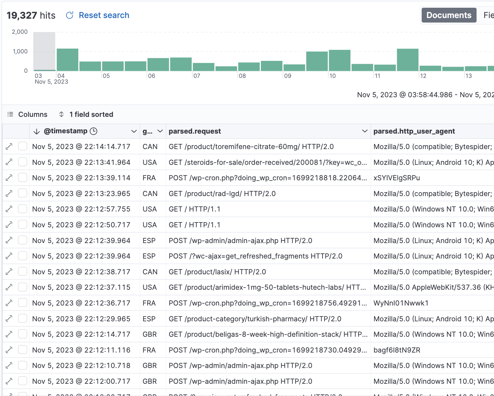
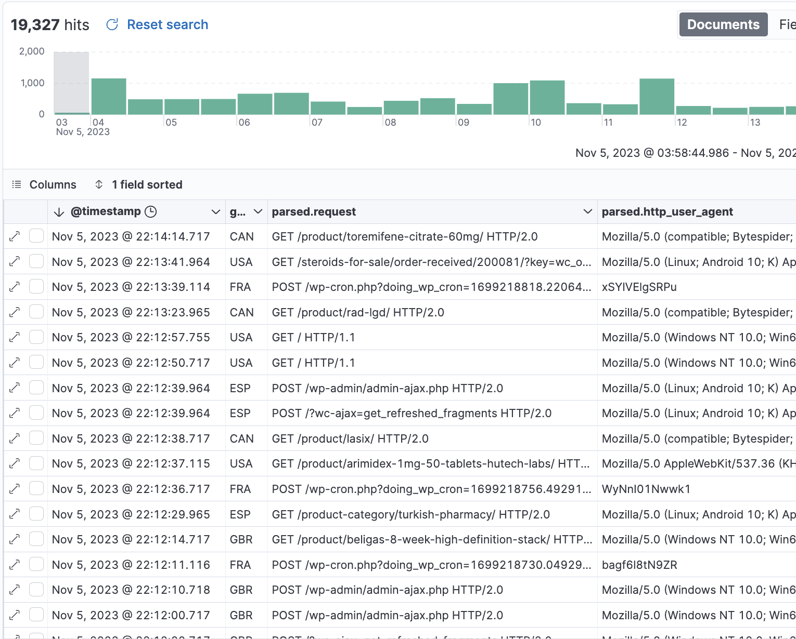

Casos A/B
Tria el millor per a WordPress
Joan Vega
- Full stack developer
- 2008 els primers WP
- 2015 allotjant WP
Temes a tractar
- Seguretat
- No funciona
- Velocitat
Seguretat: tràfic no desitjat
2023: casi el 50% bots, 30% maliciosos.
Statista,
Increditools,
Barracuda
Seguretat: tràfic no desitjat
 

Ajudeu-me a triar:

Seguretat: identifica el tràfic


Amb quin tràfic us quedaríeu?
Necessitem protecció
Intentem evitar al màxim el tràfic no desitjat


quina és més segura?
Necessitem protecció
- Actualitzacions
- Tallafocs extern WAF
- Bloqueig escriptura
Necessitem protecció
ok... si tenim poc tràfic:
- Extensions tallafocs
- Limitadors de login
No funciona
Qualsevol petit canvi
pot fer caure la web.
En aquest cas un canvi de config.
Però fins i tot sense fer res per part nostre,
WordPress i el seu contingut canvia.
No funciona: ranking causes
- Actualització (automàtica) provoca conflicte.
- Base de dades
(timeouts, errors) - Certificat https no renovat.
- Esgotat algun límit de recursos.
- Dependència externa falla.
No funciona

No funciona: que faig?

No se que passa!
L'espai ocupat en disc creix
sense que jo faci res!!
Sense fer res?
(A) Estrany
(B) Normal
L'espai en disc creix ... per:
- caché.
- sessions (carrets compra, registres, spam, bots, ...)
- backups locals.
- base de dades.
- extensió escriu a base de dades.
Velocitat
Volem que la web carregui ràpid
Velocitat: etapes
- Servir la pàgina
dns, processar, latència xarxa, ... - Pintar pàgina
carregar recursos, aplicar estils, javascript, ...
Bases per servir la pàgina ràpid
- Extensions: les mínimes
o evita les que afectin pintat o escriguin a bbdd. - Tallafocs: fora de WP
- Redireccions: fora de WP
- Base de dades: motor Innodb
- Evita temes multiproposit i
constructors pesats.
Divi,Avada, Jupiter, X Theme, ...
... algun altre remei ?
- Millora servidor / hosting
- Cache
- Va fatal... Query Monitor
(extensió anàlisi)
Quina es més lleugera?
Posem CDN si tenim tràfic Europeu?

Si incremento la memòria de WordPress, anirà més ràpid?
// ... wp-config.php
define('WP_MEMORY_LIMIT', '512M');
...
(A) Si
en alguns casos
(B) No
Bases per pintar la pàgina ràpid:
- Un bon hosting
- Un tema lleuger
- Poques extensions
- Imatge i vídeo lleugers i diferits
Core Web Vitals
Al crear una web, es important revisar
(A) Si
sempre les reviso
(B) No,
no em cal
...algun detall més concret?
- Optimitza les imatges: webp, svg
i en especial la principal (LCP) - Imatges amb les seves mides
per evitar salts (CLS) - Lazy loading per imatges i vídeos
- Javascript: el mínim (FID)
i diferit:<script defer ...
moltes gràcies :)
- Presentació
github: sitamet/casos-ab-tria-el-millor-per-wordpress/ - Vota A/B: un experiment
github: sitamet/vote-ab i sitamet/vote-ab-server - Gràcies reveal.js
github: hakimel/reveal.js